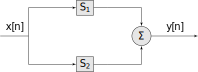
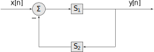
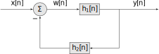
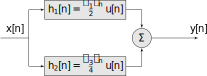
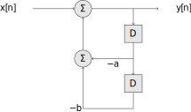
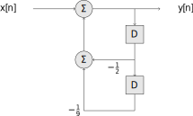

11 DT Block Diagrams
11.1 The Four Basic Motifs
Block diagrams of DT systems are similar to CT systems.
The four motifs are:
- A single block.
- A series connection of two blocks
- A parallel connection of two blocks

- A feedback connection

Note the feedback is negative (the minus sign on the feedback summation input). As in CT, these can be used in various combinations.
11.2 Connections to Convolution
Each subsystem, \(\mathcal{S}_i\), can be represented by a basic discrete time-domain operation (e.g. differences, running sums, addition, and scaling) or more generally by its impulse response \(h_i[n]\).
For example a block representing an system acting as a delay of one sample is typically drawn as
This is equivalent to an impulse response \(h[n] = \delta[n-1]\) so that it might also be drawn as
Similarly, a block representing an system acting as an advance of one sample is typically drawn as
This is equivalent to an impulse response \(h[n] = \delta[n+1]\) so that it might also be drawn as
We can use the concept of convolution to connect block diagrams to the properties of convolution
A single block is equivalent to convolution with the impulse response for that subsystem
A block represeted by an arbitrary impulse response. Using the associative property, a series connection of two blocks becomes
A series connection of blocks and the overall impulse response. which can be reduced to a single convolution \(y[n] = h_3[n]*x[n]\) where \(h_3[n] = h_1[n]*h_2[n]\).
Using the distributive property, a parallel connection of two blocks becomes
A parallel connection of blocks and the overall impulse response. which is equivalent to a single convolution \(y[n] = h_3[n]*x[n]\) where \(h_3[n] = h_1[n] + h_2[n]\).
In the feedback connection let \(w[n]\) be the output of the summation

A feedback connection of blocks and the overall impulse response. Then \(y[n] = h_1[n]*w[n]\) and \(w[n] = x[n] - h_2[n]*y[n]\). Substituting the later into the former gives \(y[n] = h_1*(x-h_2[n]*y[n])\). Using the distributive property we get \(y[n] = h_1[n]*x[n] - h_1[n]*h_2[n]*y[n]\). Isolating the input on the right-hand side and using \(y[n] = \delta[n]*y[n]\) we get \[y[n] + h_1[n]*h_2[n]*y[n] = \left(\delta[n] + h_1[n]*h_2[n]\right)*y[n] = h_1[n]*x[n]\] We can solve this for \(y[n]\) using the concept of inverse systems. Let \(h_3[n]* \left(\delta[n] + h_1[n]*h_2[n]\right)= \delta[n]\), i.e. \(h_3\) is the inverse system of \(\delta[n] + h_1[n]*h_2[n]\). Then \[y[n] = h_3[n]*h_1[n]*x[n]\]
Recall, when the system is instantaneous (memoryless) the impulse response is \(a\delta[n]\) for some constant \(a\). This is the same as scaling the signal by \(a\). We typically drop the block in such cases and draw the input-output operation as

These properties allow us to perform transformations, either breaking up a system into subsystems, or reducing a system to a single block.
Example
Consider a second-order system system with impulse response \[h[n] = \left(\frac{1}{2}\right)^n\, u[n] + \left(\frac{3}{4}\right)^n\, u[n]\] We can express this as a block diagram consisting of two parallel blocks

11.3 Connections to LCCDE
The other DT system representation we have seen are linear, constant-coefficient difference equations. These can be expressed as combinations of advance or delay blocks. This is straightforward compared to the CT system case.
11.3.1 First-Order System
To illustrate this consider the first-order LCCDE \[y[n+1] + ay[n]= x[n+1]\] We can solve this for \(y[n]\) \[y[n] = -\frac{1}{a}y[n+1] + \frac{1}{a}x[n+1]\] and can express this as a feedback motif using the advance operator \(E\)
Alternatively we could rewrite the difference equation in recursive delay form \[y[n] = -ay[n-1] +x[n]\] which can be expressed as a block diagram using the delay operator, \(D\)
The choice of using advance or delay blocks results in a non-causal or causal (respectively) system. Thus, delay blocks are required for real-time DT system implementations.
11.3.2 Second-Order System
Now consider the second-order system \[y[n+2] + ay[n+1] + by[n] = x[n+2]\] Again, writing in recursive delay form \[y[n] = -ay[n-1] - by[n-2] + x[n]\] we obtain the block diagram

11.4 Implementing a DT System
As in the CT case, one of the most powerful uses of block diagrams is the implementation of a DT system in hardware. As we shall see later in the semester, designing a DT system for a particular purpose leads to a mathematical description that is equivalent to either an impulse response or a LCCDE. We have seen how these can be represented as block diagrams. Once we have reduced a system to blocks consisting of simple operations, we can then convert the block diagram to a digital circuit, implement using a digital signal processor, or write an equivalent program to run on an embedded or general purpose computer.
| Block | Typical Digital Circuit (MCU/CPU) |
|---|---|
| Multiplier (ALU or FPU) | |
| Adder (ALU or FPU) | |
| Shift Register (Memory Location) |
Example
The following C++ code implements the second order system given by

using floating point calculations. It assumes the current input is obtained via the function read, and the output written using the function write. The delayed values of the output are stored in the array buffer and are initialized to zero ("at rest" prior to application of the input).
double buffer[2] = {0.0,0.0};
while(true){
double x = read();
double y = -0.5*buffer[1] - buffer[0]/9.0 + x;
write(y);
buffer[0] = buffer[1];
buffer[1] = y;
}Note in real applications it is common to replace the floating point calculations with fixed-width (scaled integer) ones.